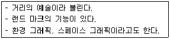
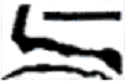
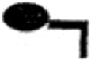
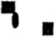
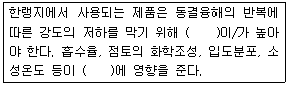
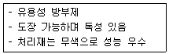

실내건축기능사 (2009-03-29 기출문제)
1과목: 실내디자인
1. 창문 전체를 커튼으로 처리하지 않고 반 정도만 친 형태를 갖는 커튼의 종류는?
- 글라스 커튼
- 새시 커튼
- 드로우 커튼
- 크로스 커튼
(정답률: 78%)

2. 냉·난방상 가장 유리한 천장의 형태는?
- 높이가 높은 아치형 천장
- 천장면이 경사진 경사 천장
- 천장면이 꺾인 꺾임형 천장
- 높이가 낮은 평평한 평형 천장
(정답률: 83%)
3. 실내디자인의 개념과 가장 거리가 먼 것은?
- 인간 생활의 쾌적성을 추구한다.
- 실내공간을 기능적, 정서적 공간으로 완성한다.
- 실내공간을 쾌적한 환경으로 창조한다.
- 실내를 자연환경으로 바꾼다.
(정답률: 95%)
4. 주거공간의 동선에 관한 설명으로 옳지 않은 것은?
- 동선은 일상생활의 움직임을 표시하는 선이다.
- 개인, 사회, 가사노동권의 3개 동선은 서로 분리되어 간섭이 없도록 한다.
- 동선은 길고, 가능한 직선적으로 계획하는 것이 바람직하다.
- 하중이 큰 가사노동의 동선은 되도록 남쪽에 오도록 하는 것이 좋다.
(정답률: 93%)
5. 상점계획에서 파사드 구성에 요구되는 소비자 구매 심리 5단계에 속하지 않는 것은?
- 주의(Attention)
- 욕망(Desire)
- 기억(Memory)
- 유인(Attraction)
(정답률: 75%)
6. 다음의 내용은 무엇에 대한 설명인가?

- P.O.P(Point of purchase)
- 슈퍼그래픽(Super graphic)
- 일러스트레이션(Illustration)
- 레터링(Lettering)
(정답률: 42%)
7. 같은 층에서 바닥에 높이 차를 둘 경우에 대한 설명으로 옳지 않은 것은?
- 칸막이 없이 공간 구분을 할 수 있다.
- 심리적인 구분감과 변화감을 준다.
- 안전에 유념해야 한다.
- 연속성을 주어 실내를 더 넓어 보이게 한다.
(정답률: 83%)
8. 점의 조형효과로 옳지 않은 것은?
- 한 점이 공간의 중심에 위치하면 집중 효과가 생긴다.
- 두 점의 크기가 같을 때 주의력은 균등하게 작용한다.
- 근접되어 있는 많은 점은 면으로 지각된다.
- 크기가 다른 점들의 모임은 정적인 느낌을 준다
(정답률: 69%)
9. 건물과 일체화하여 만든 가구로서 공간을 최대한 활용할 수 있는 가구는?
- 가동 가구
- 붙박이 가구
- 모듈러 가구
- 작업용 가구
(정답률: 94%)
10. 다음 중 대칭적 균형에 속하는 것은?



(정답률: 90%)
11. 주거공간의 영역 구분 중 개인적 영역에 속하는 것은?
- 거실
- 응접실
- 서재
- 식사실
(정답률: 97%)
12. 다음 중 선의 조형효과가 가장 동적(動的)인 것은?
- 사선
- 수평선
- 수직선
- 포물선
(정답률: 43%)
13. 이질의 각 구성요소들이 전체로서 동일한 이미지를 갖게 하는 것으로, 변화와 함께 모든 조형에 대한 미의 근원이 되는 디자인 원리는?
- 강조
- 통일
- 조화
- 균형
(정답률: 49%)
14. 일반적으로 자연적 재료가 주는 질감의 느낌은?
- 차가움
- 친근함
- 세련됨
- 날카로움
(정답률: 92%)
15. 다음 중 욕실, 현관, 다용도실의 바닥재료로 가장 적합한 것은?
- 목재
- 타일
- 석고
- 벽돌
(정답률: 92%)
16. 다음 중 자연 환기 방법이 아닌 것은?
- 온도차에 의한 환기
- 바람에 의한 환기
- 환기통에 의한 환기
- 송풍기에 의한 환기
(정답률: 80%)
17. 벽과 같은 고체를 통하여 유체에서 유체로 열이 전해지는 현상을 의미하는 것은?
- 열관류
- 열전도
- 복사
- 대류
(정답률: 61%)
18. 주광률(Daylight factor)을 나타내는 식은?
- 주광률=(실내조도/전천공조도) × 100(%)
- 주광률=(입사광속/발산광속)
- 주광률=(발산광속/단위투영광속) × 100(%)
- 주광률=(휘도/광도)
(정답률: 39%)
19. 다음 중 물리적 온열요소에 속하지 않는 것은?
- 기온
- 습도
- 복사열
- 인체의 활동상태
(정답률: 78%)
20. 음의 감각적인 크기를 표현하는데 사용되는 것은?
- lm
- lux
- phon
- %
(정답률: 69%)
2과목: 실내환경
21. 다음 중 목재의 건조 목적과 가장 거리가 먼 것은?
- 충해 방지
- 목재강도의 증가
- 목재수축에 의한 손상방지
- 가공성의 증가
(정답률: 42%)
22. 다음의 각 석재에 대한 설명 중 옳지 않은 것은?
- 화강암-내구성 및 강도가 크고 외관이 수려하며 절리의 거리가 비교적 커서 대재(大材)를 얻을 수 있다.
- 점판암-대기 중에서 변색, 변질하지 않으며 석질이 치밀하고 박판으로 채취가 가능하다.
- 트레버틴-수성암의 일종으로 다공질이며 실내 장식에 사용된다.
- 사암-단단한 것은 구조용재에 적합하나 대체로 외관이 좋지 못하며, 연약한 것은 실내장식재로 사용된다.
(정답률: 38%)
23. 다음의 건축용 점토제품에 요구되는 성질에 관한 설명 중 ( )안에 공통으로 알맞은 용어는?

- 물리적 강도
- 화학적 안정성
- 수화팽창
- 내동결성
(정답률: 59%)
24. 단열유리라고도 하고 철, N,Cr 등이 들어있는 유리로서 담청색을 띠고 있으며 서향일공을 받는 창에 주로 사용되는 것은?
- 열선흡수유리
- 강화유리
- 열선반사유리
- 자외선투과유리
(정답률: 60%)
25. 일반적으로 500℃에서 건축구조용으로 쓰이는 강재의 인장 강도는 0℃일 때 인장강도의 어느 정도인가?
- 1/2
- 1/5
- 1/10
- 1/20
(정답률: 20%)
26. 건축재료를 화학조성에 의해 분류할 경우, 다음 중무기재료에 속하지 않는 것은?
- 석재
- 콘크리트
- 알루미늄
- 목재
(정답률: 60%)
27. 다음 중 기경성 미장재료는?
- 시멘트 모르타르
- 인조석 바름
- 혼합석고 플라스터
- 회반죽
(정답률: 56%)
28. 아스팔트의 경도를 표시하는 것으로 규정된 조건에서 규정된 침이 시료 중에 진입된 길이를 환산하여 나타낸 것은?
- 신율
- 침입도
- 연화점
- 인화점
(정답률: 86%)
29. 다음 중 구조재료의 요구 성질과 가장 거리가 먼 것은?
- 재질이 균일하고 강도가 큰 것이어야 한다.
- 내화, 내구성이 작은 것이어야 한다.
- 가볍고 큰 재료를 용이하게 얻을 수 있는 것이어야 한다.
- 가공이 용이한 것이어야 한다.
(정답률: 71%)
30. 점토의 일반적인 성질에 대한 설명 중 옳지 않은 것은?
- 양질의 점토는 습윤 상태에서 현저한 가소성을 나타낸다.
- 점토 제품의 색상은 철 산화물 또는 석회 물질에 의해 나타난다.
- 점토의 비중은 불순 점토일수록 크고, 알루미 나분이 많을수록 작다.
- 일반적으로 점토의 압축강도는 인장강도의 약 5배 정도이다.
(정답률: 55%)
3과목: 실내건축재료
31. 다음과 같은 특징을 갖는 목재 방부재는?

- 크레오소트유
- 콜타르
- 염화아연용액
- 펜타클로르 페놀
(정답률: 40%)
32. 목재 및 기타 식물의 섬유질소편에 합성수지 접착제를 도포하여 가열압착성형한 판상제품은?
- 파티클보드
- 목재집성재
- 합판
- 시멘트목질판
(정답률: 49%)
33. 콘크리트 작업 중 재료분리를 줄이기 위한 방법으로 옳지 않은 것은?
- 잔골재율을 크게 한다.
- 물시멘트비를 크게 한다.
- AE제를 사용한다.
- 플라스티시티(plasticity)
(정답률: 47%)
34. 다음 중 인공골재에 속하지 않는 것은?
- 팽창혈암
- 강자갈
- 펄라이트
- 암석을 부수어 만든 모래
(정답률: 60%)
35. 대리석에 대한 설명으로 옳지 않은 것은?
- 석회석이 변화되어 결정화한 것으로 탄산 석회가 주성분이다.
- 석질이 치밀, 견고하고 색채, 무늬가 다양하다
- 산과 알칼리에 강하다.
- 강도는 매우 높지만 풍화되기 싶기 때문에 실외용으로는 적합하지 않다.
(정답률: 73%)
36. 기계적 강도, 전기적 성질이 우수하여 카운터나 조리대 등을 만드는데 사용되는 열경화성 수지는?
- 염화비닐
- 아크릴수지
- 멜라민수지
- 폴리스티렌수지
(정답률: 43%)
37. 시멘트의 분산효과를 향상시켜 콘크리트의 시공성을 높이는 혼화제는?
- 기포제
- 방청제
- 경화촉진제
- 유동화제
(정답률: 36%)
38. 비교적 굵은 철선을 격자형으로 용접한 것으로 콘크리트 보강용으로 사용되는 금속 제품은?
- 펀칭 메탈(punching metal)
- 와이어 로프(wire rope)
- 와이어 메시(wire mesh)
- 메탈 폼(metal form)
(정답률: 48%)
39. 분말도가 큰 시멘트에 대한 설명으로 옳지 않은 것은?
- 지나치게 크면 풍화되기 쉽다.
- 건조수축이 커져서 균열이 발생하기 쉽다.
- 강도의 발현속도가 빠르다.
- 수화작용이 느리므로 매스콘크리트에 주로 사용된다.
(정답률: 41%)
40. 다음 단열재에 대한 설명 중 옳지 않은 것은?
- 단열재는 열전도율이 작은 재료를 사용한다.
- 단열재는 일반적으로 흡음성능이 우수하다.
- 단열재는 보통 다공질 재료가 많다.
- 단열재는 일반적으로 역학적인 강도가 크다.
(정답률: 33%)
41. 목재의 접합에서 이음과 맞춤에서의 주의할 점으로 옳지 않은 것은?
- 접합은 응력이 작은 곳에서 할 것
- 이음, 맞춤의 단면은 응력의 방향에 직각되게 할 것
- 이음, 맞춤의 끝부분은 작용하는 응력이 균등히 전달되도록 할 것
- 재는 최대한 많이 깎아내어 맞춤면에 여유를 둘 것
(정답률: 66%)
42. 다음 중 석재 표면의 마무리 순서로 옳은 것은?
- 정다듬-메다듬-잔다듬-도드락 다듬-물갈기
- 메다듬-정다듬-도드락 다듬-잔다듬-물갈기
- 잔다듬-메다듬-도드락 다듬-물갈기-정갈기
- 정다듬-잔다듬-메다듬-도드락 다듬-물갈기
(정답률: 64%)
43. 철근콘크리트보에서 전단력을 보강하기 위해 보의 주근 주위에 둘러 배치한 철근은?
- 나선철근
- 띠철근
- 배력근
- 늑근
(정답률: 50%)
44. 구조 재료에 의한 건축구조의 분류에 속하지 않는 것은?
- 목구조
- 벽돌구조
- 강구조
- 가구식구조
(정답률: 54%)
45. 철골 용접시 발생하는 용접 결함 중 언더 컷에 대한 설명으로 적합한 것은?
- 용접 부분안에 생기는 기포
- 용착금속이 모재에 완전히 붙지 않고 겹쳐 있는 것
- 용착금속이 홈에 차지 않고 홈 가장자리가 남아 있는 것
- 용접부분표면에 생기는 작은 구멍
(정답률: 60%)
46. 곡면판이 지니는 역학적 특성을 응용한 구조로서 외력은 주로 판의 면내력으로 전달되기 때문에 경량이고 내력이 큰구조물을 구성할 수 있는 구조는?
- 패널구조
- 커튼월구조
- 쉘구조
- 블록구조
(정답률: 71%)
47. 콘크리트충전 강관구조(CFT)에 대한 설명으로 옳지 않은 것은?
- 기둥 시공시 별도의 특수 거푸집이 필요하다.
- 원형 또는 각형강관이 주로 사용된다.
- 일종의 합성구조이다.
- 에너지 흡수 능력이 뛰어나 초고층 구조물에 적용 가능하다.
(정답률: 25%)
48. 철근콘크리트구조에서 스팬이 긴 경우에 보의 단부에 발생하는 휨모멘트와 전단력에 대한 보강으로 보 단부의 춤을 크게 한 것을 무엇이라 하는가?
- 드롭패널
- 플랫 슬래브
- 헌치
- 주두
(정답률: 34%)
49. 다음 중 건축제도통칙(KS F 1501)에서 규정하고 있는 척도가 아닌 것은?
- 1/5
- 1/100
- 1/150
- 1/300
(정답률: 60%)
50. 실내부의 벽하부를 보호하기 위하여 높이 1~1.5m 정도로 널을 댄 벽을 무엇이라 하는가?
- 코펜하겔 리브
- 걸레받이
- 커튼월
- 징두리 판벽
(정답률: 41%)
4과목: 건축일반
51. 다음 중 제도 글자에 대한 설명으로 옳지 않은 것은?
- 숫자는 아라비아 숫자를 원칙으로 한다.
- 문장은 가로쓰기가 곤란할 때에는 세로쓰기도 할 수 있다.
- 글자체는 수직 또는 45˚경사의 고딕체로 쓰는 것을 원칙으로 한다.
- 글자의 크기는 각 도면의 상황에 맞추어 알아보기 쉬운 크기로 한다.
(정답률: 45%)
52. 투시도법의 종류 중 평행 투시도법이라고도 불리우며 일반적으로 실내 투시도 작성시 사용되는 것은?
- 1소점 투시도법
- 2소점 투시도법
- 3소점 투시도법
- 유각 투시도법
(정답률: 64%)
53. 원로 이외의 곡선을 그을 때 사용하는 제도 용구는?
- 운형자
- 템플릿
- 컴퍼스
- 디바이더
(정답률: 80%)
54. 각 건축구조의 특성을 설명한 것 중 옳지 않은 것은?
- 벽돌구조는 횡력 및 지진에 강하다.
- 철근콘크리트구조는 철골구조에 비해 내화성이 우수하다.
- 철골구조의 공사는 철근콘크리트구조 공사에 비해 동절기 기후에 영향을 덜 받는다.
- 목구조는 소규모 건축에 많이 쓰이며 화재에 약하다.
(정답률: 64%)
55. 평균기온이 10℃이상, 20℃미만일 때 기둥 및 벽에 보통포틀랜드 시멘트를 사용한 콘크리트를 타설시 거푸집 최소 존치기간은?
- 2일
- 4일
- 6일
- 8일
(정답률: 35%)
56. 다음 선의 종류 중 인출선, 치수 보조선 등으로 사용되는 것은?
- 실선
- 파선
- 1점 쇄선
- 2점 쇄선
(정답률: 54%)
57. 다음 중 건축물의 입면도를 작도할 때 표시하지 않는 것은?
- 방위표시
- 건물의 전체높이
- 벽 및 기타 마감재료
- 처마높이
(정답률: 47%)
58. 목재 기둥의 종류 중 2층 이상의 높이를 하나의 단일재로 사용하는 것은?
- 평기둥
- 통재기둥
- 샛기둥
- 가새
(정답률: 73%)
59. 다음 중 지붕공사에서 금속판을 잇는 방법이 아닌 것은?
- 평판잇기
- 기와가락잇기
- 마름모잇기
- 쪽매잇기
(정답률: 46%)
60. 표준형 벽돌에서 칠오토막의 크기로 옳은 것은?
- 벽돌 한 장 길이의 1/4 토막
- 벽돌 한 장 길이의 1/3 토막
- 벽돌 한 장 길이의 1/2 토막
- 벽돌 한 장 길이의 3/4 토막
(정답률: 65%)